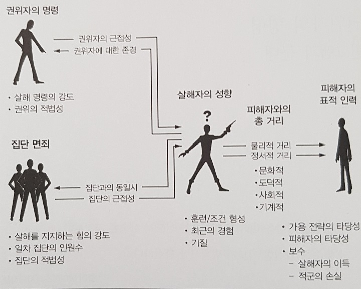

ㅎㅇㅎㅇ
살인의 심리학
1. 살해에 대한 거부감,
살인행위를 거부하게 하는 강력한 요인이 인간종에게 존재함
결정적순간(쏠까?말까?)에 양심적병역거부가 일어남
적을 살해하지 않았던 많은 군인들과 그에대한 증거가 많음
- 수치스러운 행동이라고 생각했던 군인들
- 열심히 싸웠던사람도 그 심정에 대해 이해하고 침묵함
- 역사 속에서 침묵의 공모가 일어났음
- 많이 안 알려졌지만 이제부터 알아보자
2. 군인들은 왜 멘탈이 나갈까
전쟁에서 일어나는 일에 대해 제대로 이해해야 한다
#장님 코끼리 만지기 - 정신적 사상자에 대해 사람들은 이해하지못함
미디어의 영향
- 람보, 인디애나 존스, 제임스 본드.. 등등
- 전투, 살해가 쉽게 여겨짐
전쟁에서 무슨 일이 일어나는지 그대로 다루는 것은 고통스러움, 거부감
관계자들마저도 아래에서 나오는 내용에 대해 전부 알지 못함 ex) 참전용사의 어려움 --> 적응의 문제라고 생각함
1. 두려움
- 많은 사람들이 생각하는 직접적인 원인, 그러나..
- 폭격받은 민간인들 - 멘탈나가랏- 왜 민간인들이 군인보다 정신이 멀쩡하지?
- 소총으로 적을 쏠일 없는사람들 - 의무병, 장교, 해병, 공군,기관총 - 상대적으로 멘탈 ㄱㅊ
- 두려움이 유일한원인은아닌거같은데?
2. 피로
- 피로요인들이 많다(전투스트레스(각성-이완), 수면결핍, 식량부족, 날씨...)
- 개빡센훈련의 이유->높은스트레스경험, 심리적트라우마에 내성을키움
신진환회원님 빠이팅!
3. 감정적 동요
같은 상황에서 종군기자, 포로, 비전투원(위생병 등..) 보다 전투원들이 훨씬 심하게 공포를 느낌
책임감, 의무를 크게 느낌 - 모든 죽은 적군은 내탓, 모든 아군을 지켜야 한다고 느낌
4. 증오를 마주침
우린 사실 신체적 고통, 상해에 대한 두려움을 즐기기도함
다른 사람의 적대감에 대해 가장 큰 공포를 느낀다 (모욕, 따돌림, 구타, 강간..)
- 전투트라우마는 강간트라우마랑 비슷하다? (죽거나 다칠거라는 두려움과 관계가없다)
- 적대감을 마주치는것은 엄청난 스트레스(주요한 자살 요인..)
- 공습(집단에게 무작위로 가해짐)을 받았던 민간인들은 정신이 멀쩡했지만 (오히려 생산량 증가)
- 나치강제수용소(개인에게 가해지는 괴롭힘)에서는 거의 전부가 정신적 트라우마를 겪음
- 공습 보다는 침공이 일어났을 때 사람들은 패닉에 빠진다
훈련을 통한 예방접종?
6. 의지력
- '타고난 용기' - 2%의 오랜시간 잘싸우는 사람들
- 98%에게 ''용기''는 소모품, 결국엔 멘탈나감, 의지의 고갈==>"정신적 사상자"
- 의지력을 나눠받기도함 ->용감한 지휘관 or 승리
7. 살해
- 같은 종을 죽이지 않으려하는 거부감
- 미디어의 오해, 살해는 고통스럽다
- 살해하지 않은 죄책감 - 동료가 죽어가는 상황에서 총을 쏘지않은 트라우마
- 지휘관의 죄책감 - 다른조치를 취했더라면 병사가 안죽었을 텐데.. -> 훈장을 주는 이유
3. 살해와 물리적 거리
- 거리가 멀어짐에 따라 공격이 더 쉬워진다
- 피해자에 공감하는 능력은 물리적 거리에 반비례함

성적 거리?
- 피해자와 거리가 극단적으로 가까울 때 살해와 성행위가 뒤섞임
- 권력과 정복?? 알아서 읽어보고 얘기해보자
"우리 안에 자리한 어둠과 파괴의 힘은 동료 인간을 향한 빛과 사랑의힘으로 균형잡혀있다.
이 힘들은 우리 각자의 마음속에서 투쟁하며 서로 겨루고 있다.
한 쪽을 무시하는 것은 곧 다른 쪽을 무시하는 것과 같다.
어둠을 인정하지 않는다면, 우리는 빛을 알 수 없다.
죽음을 인정하지 않는다면, 우리는 삶을 알 수 없다."
4. 살해의 해부:고려대상이 되는 모든요인들

권위에 대한 복종
- 밀그램실험 - 권위는 아주강력함, 악의 보편성?
- 누구의 명령? 보고있나? 구체적인 명령?
집단 면죄
- 대포, 기관총 - 여럿이서 쏘는 무기, 책임의 분산
- "살해자는 개인이 아니라 집단이다"
- "그들이 내 친구들을 죽이고 있다"
정서적 거리
- 문화: 인종, 민족
- 도덕: 우리 집단의 도덕적우월성에 대한 믿음
- 사회: 계층간 거리..
- 기계: 화면, 조준경, 야간투시경..
피해자의 특성
전략의 타당성: 살해시도가 얼마나 성공가능?
피해자의 타당성, 보수
- 나에게 공격? 적군내 위치? 무장을했는가? (철모<베레모 인이유)
- 적인데 여성?
살해자의 성향
어떤훈련을 받았는가
최근의 경험: ex) 동료의 죽음..
'타고난 군인'의 기질
- 2%는 정당한 이유가 주어진다면 후회나 자책없이 살해가 가능
- 장기간 전투를 해도 '정신적 사상자'가 되지않음
- 그렇다고 얘네가 전부 나쁜게 아님 - 전시에만 이런성향 보이는 사람이 있음(늑대, 목양견)
"사회는 전투에서의 살해 과정과 살해에 따른 대가가 얼마나 엄청난 것인지를 이제 이해하려 해야한다. 사회가 이를 이해하고 나면, 살해는 결코 예전과 동일한 것으로 보이지 않게 될것이다."
살해와 잔학 행위